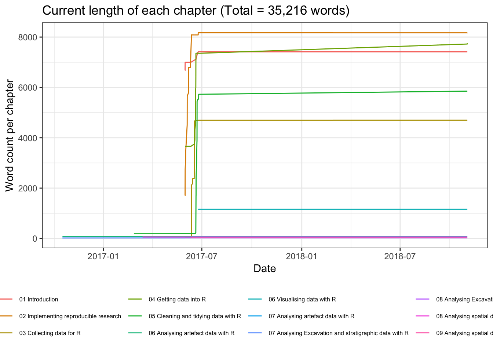

Archaeological Science with R
Ben Marwick
2018-11-01
Chapter 1 Archaeological Science with R
This book will teach you how to get started doing archaeological science with R: You’ll learn how to get your data into R, get it into the most useful structure, transform it, visualise it and model it. In this book, you will find a practicum of skills for archaeological science.
To be published by XXX in XXX 201X.
Here is a summary of the progress of the book:
| Number | Title | Wordcount | last_edit |
|---|---|---|---|
| 01 | Introduction | 7413 | 2018-11-01 10:27:04 |
| 02 | Implementing reproducible research | 8174 | 2018-11-01 11:06:15 |
| 03 | Collecting data for R | 4696 | 2018-11-01 10:27:04 |
| 04 | Getting data into R | 7752 | 2018-11-01 11:47:43 |
| 05 | Cleaning and tidying data with R | 5853 | 2018-11-01 10:27:04 |
| 06 | Visualising data with R | 1162 | 2018-11-01 10:27:04 |
| 07 | Analysing artefact data with R | 86 | 2018-11-01 10:27:04 |
| 08 | Analysing Excavation and stratigraphic data with R | 23 | 2018-11-01 10:27:04 |
| 09 | Analysing spatial data and making maps with R | 57 | 2018-11-01 10:27:04 |
